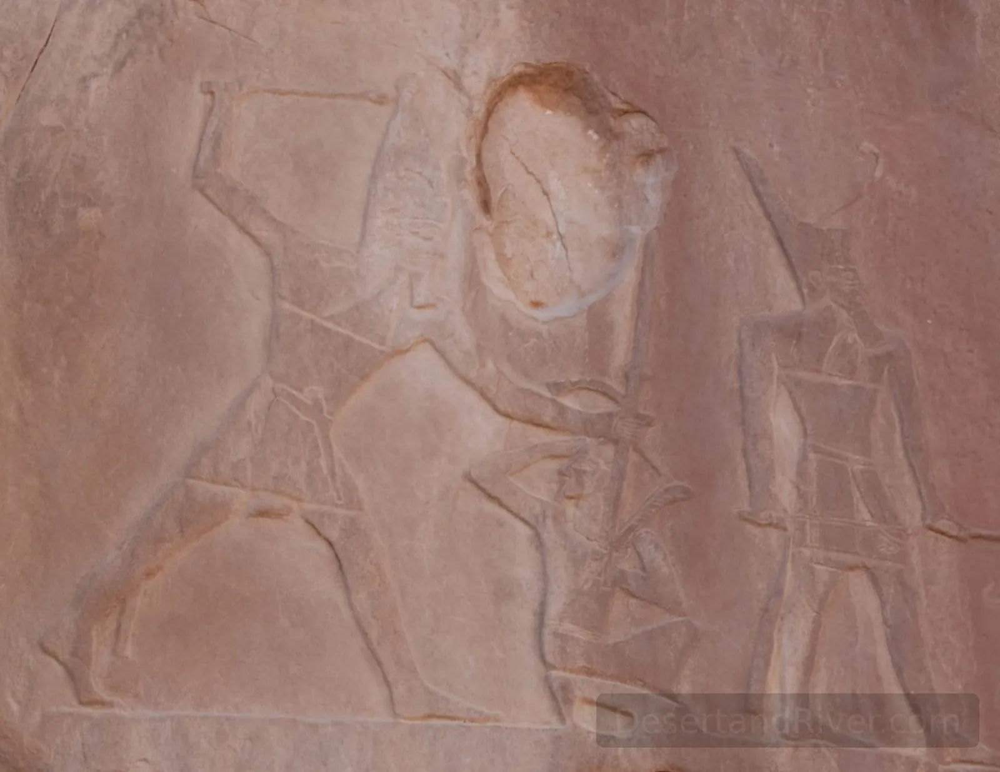

Это не йога-ретрит. Здесь нет учителя и нет расписания. Только четыре дня в глубине пустыни Синая, три ночи под звёздами в её самых древних и тихих местах и сколько угодно времени, чтобы медитировать, думать или просто быть. Каждая ночь приближает вас к храму Хатхор, «Владычицы бирюзы», где вы встречаете закат, спите под звёздами и просыпаетесь с рассветом. Гиды — Джозеф и Аннет, шеф-повар Мэри готовит всю еду, а остальное делает пустыня.

Бирюзовый путь
У путешествия есть сюжет. Вы начинаете у Навамис — круглых каменных гробниц возрастом около 6000 лет, старше пирамид. Затем поднимаетесь к древней Бирюзовой пещере, где египтяне добывали голубовато-зелёный камень, который подносили своей богине. И заканчиваете у её храма: Хатхор, богиня любви, музыки и радости, «Владычица бирюзы», на вершине горы в Серабит-эль-Хадим. В Египте мало мест таких древних, таких тихих и так редко посещаемых.

Маршрут
- День 1: Дахаб → дюна Хидуда → обед у горы Гебель Махрум (Голова Дракона) → Навамис. День, закат и ночь в тишине у Навамис
- День 2: медитация на рассвете у Навамис → дорога в долину под древней Бирюзовой пещерой → около часа подъёма к пещере, время в тишине и спуск. Ужин и ночь в нашем лагере в долине
- День 3: дорога в Серабит-эль-Хадим. Обед и тихий отдых в тени. Около 15:00 поднимаемся к храму Хатхор на закат, затем ужин, звёзды и ночь в нашем лагере у храма
- День 4: рассвет у храма → спуск → обед → дорога обратно в Дахаб, прибытие ближе к вечеру


Мы не учим вас медитировать. Пустыня достаточно тиха, чтобы научить сама.

Ночное небо и огни
Вдали от городов у Серабит-эль-Хадим и Навамис одно из самых тёмных небес в Египте. В ясную ночь Млечный Путь виден от горизонта до горизонта. За эти годы некоторые наши гости и местные бедуины рассказывали, что видели здесь странные огни, движущиеся по небу. Сами мы их не видели и ничего не обещаем. Но у Синая долгая история таких рассказов, а в 2022 году несколько ветеранов армии США рассказали, что в 2014 году видели необъяснимые огни над границей Синая. Читать историю
Посмотрите перед поездкой
Серабит-эль-Хадим: бирюзовые рудники и храм Хатхор
Фараонские бирюзовые рудники Серабит-эль-Хадим
Гробницы Навамис — старше пирамид
Включено
- Трансфер от вашего отеля в Дахабе или от The Hub и обратно
- Индивидуальный джип для вашей группы на все 4 дня
- Все разрешения и сборы бедуинов
- Всё питание на 4 дня от шеф-повара Мэри
- Вода, чай и кофе
- Снаряжение для кемпинга: матрасы, одеяла и спальные мешки
- Ваши гиды Джозеф и Аннет
Не включено: оборудование для наблюдения за звёздами (телескоп или бинокль), чаевые и личные расходы.
Взять с собой
- Паспорт (на внутренних дорогах есть блокпосты)
- Хорошую обувь для походов
- Тёплую одежду на ночь (в горах холодно)
- Налобный фонарь
- Всё, что помогает вам медитировать: дневник, шаль, подушку
Подходит ли вам это путешествие?
Оно для тех, кому тишина важнее комфорта. Вы спите на улице под звёздами, душа нет, и есть два крутых подъёма примерно по часу — к Бирюзовой пещере и к храму. Быть спортсменом не нужно, но нужно уметь идти в гору в своём темпе. Обязательной программы нет: присоединяйтесь к прогулкам или оставайтесь в лагере наедине с собой.
Цена
$1 600 за 1–2 человек · $2 200 за 3–4 человек
Забронировать путешествие
Отправьте нам даты и количество человек в WhatsApp. Мы подтвердим даты и пришлём защищённую ссылку для оплаты предоплаты. Остаток оплачивается в Дахабе.
Забронировать в WhatsAppОтзывы наших гостей

Отмена
Бесплатная отмена не позднее чем за 3 дня до поездки. При более поздней отмене взимается полная стоимость.